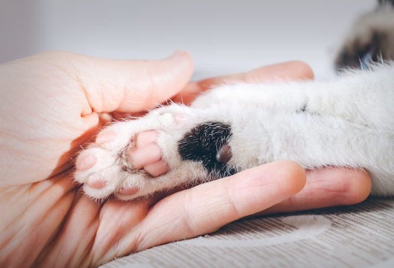

為什麼大部分貓咪不喜歡被摸手？肉球有什麼功能？竟然可以算命？！
文章轉載：風傳媒
我們先來看看貓咪掌球有哪些形狀吧！確認好了形狀之後，趕快來看一下個性分析吧！
輕輕地撥開牠的腳底毛仔細觀察一下你家貓咪的掌球吧！這裡的掌球是看前腳的，後腳不準唷！ 萬一你家的貓左右手掌球形狀不一樣的話，就以左邊的為主。

A型的貓咪－掌球頂端像是愛心的形狀
這類型的貓咪很愛撒嬌、親人、渴求被愛、喜歡和人在一起；只要叫牠的名字就會喵喵叫回答，是正直又開朗的孩子。愛和飼主說話，是很惹人憐愛的貓咪。
這類型的貓咪即使家裡有客人來也比較無所謂，因為個性開朗，比較願意接待陌生人；因此許多店貓都是A型的孩子哦！在幫牠們看掌球時也比較簡單，即使抓握牠們的手，也頂多露出「喵？要做什麼？」的樣子，不太會掙脫掉。
A型的貓咪基本上都是貪吃鬼，常常會跟主人撒嬌要食物吃。 另外，A-1、A-3的貓咪會特別愛講話哦！
B型的貓咪－掌球頂端是圓的
B型的貓咪個性比較樂天，帶著一些狂野，是人緣很好的孩子。不只人類會很喜歡牠們，就連在貓咪之中，B型的貓咪也是人氣王，很適合多貓家庭飼養；牠們會受到其他貓咪的歡迎，不自覺地就吸引大家聚集，簡直就像是學校裡的風雲人物一樣；而狂野的個性讓牠們喜歡冒險，因此會抓獵物回來的通常也都是B型的貓咪。
B型再細分來看時比較特別的是B-1，這類型的貓咪雖然不討厭人，但是牠們也做不來撒嬌這種事；家裡的貓咪若是這類型的話，最好不要太過度保護牠或打擾牠，保持一點距離牠會覺得比較舒服。
C型的貓咪－掌球頂端中間是平的但二邊有微微隆起
C型的貓咪基本上是喜歡安靜的個性，牠們不太鳥主人或是其他的貓咪，喜歡我行我素的生活；把貓咪優雅孤傲的氣質發揮地淋漓盡致。因為很文靜，C型的貓咪不太會給主人惹什麼麻煩，不過要注意的是牠們很會忍耐，即使身體不舒服也不會表現出來；身為主人遇到C型的貓咪時，即使再細微的變化都不能大意哦！
C型的貓咪與其說牠們不喜歡陌生人來，倒不如說牠們不喜歡自己的藏身之處（就是家裡）常常被弄亂的感覺，但是偶爾的話牠們倒不太介意，甚至也會招呼客人。
而說到拍照，很多貓咪看到大大的黑色鏡頭都會覺得害怕，但是C型的貓咪因為個性很沈穩，幫牠們拍照相對就簡單很多，而且也經常可以拍出許多好照片哦！
D型的貓咪－掌球頂端的形狀和C型一樣，但是掌球本身的溝較淺
D型的貓咪個性就是三個字—很難搞！要得到牠們的認同非常困難，完全不是社交型的貓咪。雖然牠們也會想待在主人的身邊，但是只要稍微有個風吹草動，牠們就會嚇得馬上跑去躲起來。不太有自己的個性、也不懂得撒嬌、缺乏野性、也沒有自制力、只要有喜歡的食物就會吃撐到吐出來、雖然看起來好像很沈穩，但其實一有什麼小動靜就會嚇得炸毛。總而言之就是會讓主人很放心不下的貓咪類型！
E型的貓咪－掌球整體形狀看起來像三角型
據說E型的貓咪個性就是兇、巴、巴！因為太過神經質難以接近所以無法分析個性！（昏）